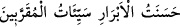

kemâli, meşakkatli riyâzatlar, halvet ve mücâhedelerle tamamlamaktır. Peygamberler ile
velilerin yurtlarından uzaklaştırılması da bu makamdandır.
Molla Câmî der ki:
Ey gönül, sabra gayret et, ayrılık gününde sabrın faydası nedir?
Tabip acı şerbeti faydalı olsun diye yaptı, verdi.
Bâzıları şöyle der: Yâkub (a.s.), şu sebepten dolayı oğlunun ayrılığı ile imtihan edildi.
Bir haberde vârid olduğuna göre Yâkub (a.s.) bir oğlağı annesinin gözleri önünde kesti.
Allah da bundan razı olmayarak kana karşı kan akıtmış, ayrılığa karşı ayrılık vermiştir.
Çünkü peygamberlik makamının şânına uygun hareket etmek de çok büyük ve zor bir
görevdir. “__WORD__ Ebrâr için iyilik olan davranışlar mukarrabîne
göre kötülük sayılır.” ifadesi de bu mânâdadır.
Bazıları ise şöyle söyler: Yûsuf doğunca Yâkub (a.s.) onun için câriye bir süt anne
satın aldı. Ancak bu süt annenin henüz emmekte olan bir yavrusu vardı. Yâkub (a.s.)
Yûsuf’un içeceği süt daha da artsın diye kadının yavrusunu satınca, kadın ağlayıp
sızlayarak şöyle niyazda bulundu: “Ya Rab! Yâkub beni yavrumdan ayırdı. Sen de oğlu
Yûsuf’u ondan ayır!” Allah da bu duâyı kabul buyurdu ve Yâkub (a.s.) oğluna ancak bu
câriye kendi oğluna kavuştuktan sonra kavuşabildi.
Bir hadiste şöyle buyrulur: “Hiçbir ana, yavrusu kendisinden ayrılmak sûretiyle
feryâd ettirilmemelidir.”[15] el-Cevherî’de de belirtildiği üzere bu (genellikle) esir
edilen kadınlar için söz konusudur.
el-Makâsıdü’l-hasene’deki hadislerden biri şöyledir: “Kim bir anneyi yavrusundan
ayırırsa, Allah Teâlâ da kıyamet günü onu sevdiklerinden ayırır.”[16]
Her ne kadar bu tip davranışlar peygamberler açısından uzak ihtimaller ise de kaza
hükmünü icrâ ederek yapacağını yapmaktadır.
__WORD__
Hz. Şeyh-i Ekber (k.s.) der ki: “Hak Teâlâ ayağını sürçtürmek sûretiyle bir kulunun
bütün fiillerinde “Allah’ın emri mutlaka yerine gelecek, yazılmış bir kaderdir.”
(Ahzâb, 33/38) âyetinin hükmünü infaz etmek istediği zaman, kaderi istediği şekilde
icra eder. Ancak bu kul inâyet ve vusûl ehlinden ise sonunda onu kendi makamına iâde
eder.”
Bâyezid (k.s.)’a: “Ârifler de isyan eder mi?” diye soruldu. “Allah’ın emri mutlaka
yerine gelecek yazılmış bir kaderdir.” (el-Ahzâb, 33/38) diye cevap verdi.
Hâfız der ki:
Âdem Safiyyullâh’ı isyan şimşeği vurduğu yerde
Günahsızlık iddiası bize nasıl yaraşır?